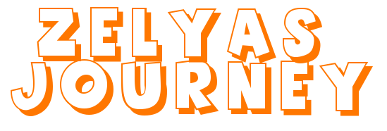

Jogo do zé é baum

Altura do pulo do zé
Velocidade do zé
Comece a jogar agora mesmo o
jogo do zé.
O
jogo do zé
é o relativamente o
jogo do zé
, é como se você fosse o zé e estivesse jogando o jogo do zé na vida dele.